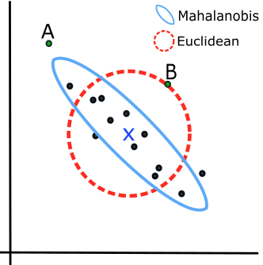

The Data Ellipse
The data ellipse [@Monette:90], or concentration ellipse [@Dempster:69] is a remarkably simple and effective display for viewing and understanding bivariate relationships in multivariate data. The data ellipse is typically used to add a visual summary to a scatterplot, that shows all together the means, standard deviations, correlation, and slope of the regression line for two variables. Under the classical assumption that the data are bivariate normally distributed, the data ellipse is also a sufficient visual summary, in the sense that it captures all relevant features of the data. See @Friendly-etal:ellipses:2013 for a complete discussion of the role of ellipsoids in statistical data visualization.
It is based on the idea that in a bivariate normal distribution, the contours of equal probability form a series of concentric ellipses. If the variables were uncorrelated and had the same variances, these would be circles, and Euclidean distance would measure the distance of each observation from the mean. When the variables are correlated, a different measure, Mahalanobis distance is the proper measure of how far a point is from the mean.
To illustrate, ?@fig-mahanalobis shows a scatterplot with labels for two points, “A” and “B”. Which is further from the mean, “X”? A contour of constant Euclidean distance, shown by the red dashed circle, ignores the apparent negative correlation, so point “A” is further. The blue ellipse for Mahalanobis distance takes the correlation into account, so point “B” has a greater distance from the mean.
Mathematically, Euclidean (squared) distance for \(p\) variables, \(j = 1, 2, \dots , p\), is just a generalization of the square of a univariate standardized (\(z\)) score, \(z^2 = [(y - \bar{y}) / s]^2\),
\[ D_E^2 (\mathbf{y}) = \sum_j^p z_j^2 = \mathbf{z}^T \mathbf{z} = (\mathbf{y} - \bar{\mathbf{y}})^T \operatorname{diag}(\mathbf{S})^{-1} (\mathbf{y} - \bar{\mathbf{y}}) \; , \] where \(\mathbf{S}\) is the sample variance-covariance matrix, \(\mathbf{S} = ({n-1})^{-1} \sum_{i=1}^n (\mathbf{y}_i - \bar{\mathbf{y}})^T (\mathbf{y}_i - \bar{\mathbf{y}})\).
Mahalanobis’ distance takes the correlations into account simply by using the covariances as well as the variances. \[ D_M^2 (\mathbf{y}) = (\mathbf{y} - \bar{\mathbf{y}})^T S^{-1} (\mathbf{y} - \bar{\mathbf{y}}) \] For \(p\) variables, the data ellipsoid \(\mathcal{E}_c\) of size \(c\) is a \(p\)-dimensional ellipse, defined as the set of points \(\mathbf{y} = (y_1, y_2, \dots y_p)\) whose squared Mahalanobis distance, \(D_M^2 ( \mathbf{y} )\) is less than or equal to \(c^2\).
When \(\mathbf{y}\) is (at least approximately) bivariate normal, \(D^2(\mathbf{y})\) has a large-sample \(\chi^2_2\) distribution (\(\chi^2\) with 2 df), so taking \(c^2 = \chi^2_2 (0.68) = 2.28\) gives a “1 standard deviation bivariate ellipse,” an analog of the standard interval \(\bar{y} \pm 1 s\), while \(c^2 = \chi^2_2 (0.95) = 5.99 \approx 6\) gives a data ellipse of 95% coverage.
Properties
For two variables, \(x\) and \(y\), the remarkable properties of the data ellipse are illustrated in Figure 2.

The ellipses have the mean vector \((\bar{x}, \bar{y})\) as their center.
The lengths of arms of the central cross show the standard deviations of the variables, which correspond to the shadows of the ellipse covering 40% of the data. These are the bivariate analogs of the standard intervals \(\bar{x} \pm 1 s_x\) and \(\bar{y} \pm 1 s_y\).
More generally, shadows (projections) on the coordinate axes, or any linear combination of them, give any standard interval, \(\bar{x} \pm k s_x\) and \(\bar{y} \pm k s_y\). Those with \(k=1, 1.5, 2.45\), have bivariate coverage 40%, 68% and 95%, corresponding to these quantiles of the \(\chi^2\) distribution with 2 degrees of freedom, i.e., \(\chi^2_2 (.40) \approx 1^2\), \(\chi^2_2 (.68) \approx 1.5^2\), and \(\chi^2_2 (.95) \approx 2.45\).
The regression line predicting \(y\) from \(x\) goes through the points where the ellipses have vertical tangents. The other regression line, predicting \(x\) from \(y\) goes through the points of horizontal tangency.
The correlation \(r(x, y)\) is the ratio of the vertical segment from the mean of \(y\) to the regression line to the vertical segment going to the top of the ellipse as shown at the right of the figure. It is \(r = 0.46\) in this example.
The residual standard deviation, \(s_e = \sqrt{MSE} = \sqrt{\Sigma (y - \bar{y})^2 / n-2}\), is the half-length of the ellipse at the mean \(\bar{x}\)
Because Galton’s values of parent and child height were recorded in class intervals of 1 in., they are shown as sunflower symbols with multiple ‘petals’ reflecting the number of observations at each location. This plot is constructed using sunflowerplot() and car::dataEllipse() for the ellipses.
data(Galton, package = "HistData")
sunflowerplot(parent ~ child, data=Galton,
xlim=c(61,75),
ylim=c(61,75),
seg.col="black",
xlab="Child height",
ylab="Mid Parent height")
y.x <- lm(parent ~ child, data=Galton) # regression of y on x
abline(y.x, lwd=2)
x.y <- lm(child ~ parent, data=Galton) # regression of x on y
cc <- coef(x.y)
abline(-cc[1]/cc[2], 1/cc[2], lwd=2, col="gray")
with(Galton,
car::dataEllipse(child, parent,
plot.points=FALSE,
levels=c(0.40, 0.68, 0.95),
lty=1:3)
)